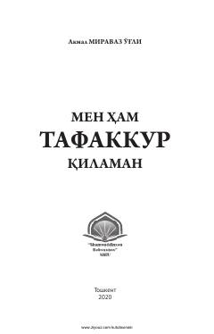

MHQur'on oyatlarini o'qib tafakkur qilish asosida yozilgan diniy-ijtimoiy xulosalar kitobi.
Ushbu kitob Qur'oni Karim oyatlarini o'qib, tafakkur qilish natijasida hosil bo'lgan diniy-ijtimoiy xulosalar va mavzularni o'z ichiga oladi. Muallif bugungi kun kishisi uchun zarur bo'lgan hayotiy mavzu va hikmatlarni oyatlar asosida yoritib bergan. Kitob keng kitobxonlar ommasiga mo'ljallangan bo'lib, muqaddas matnlardan to'g'ri xulosa chiqarishga ko'maklashadi.